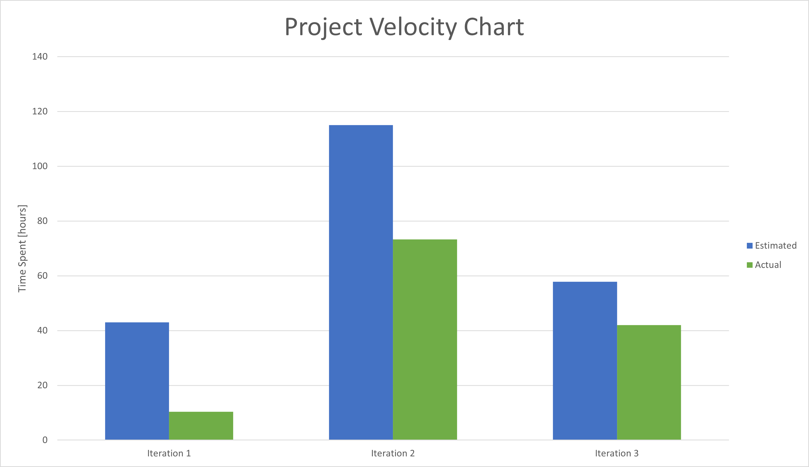

The estimates got better through the course as we learned more about the tools and gained experience while working on the project. Iteration 1 (approx 20% spent) Est 1w 3h Spent 1d 2h 22m https://code.cs.umanitoba.ca/winter-2022-a02/group-14/warehouse-inventory-system/-/milestones/2#tab-issues Iteration 2 (approx 60% spent) Est 2w 4d 3h Spent 1w 4d 1h 20m https://code.cs.umanitoba.ca/winter-2022-a02/group-14/warehouse-inventory-system/-/milestones/3#tab-issues Iteration 3 (approx 70% spent) Est 1w 2d 1h 50m Spent 1w 2h https://code.cs.umanitoba.ca/winter-2022-a02/group-14/warehouse-inventory-system/-/milestones/4#tab-issues
created with
Website Builder Software .